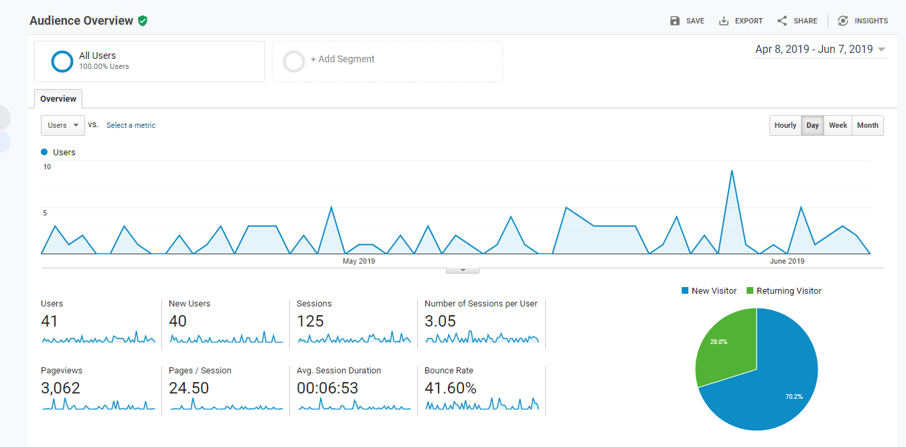
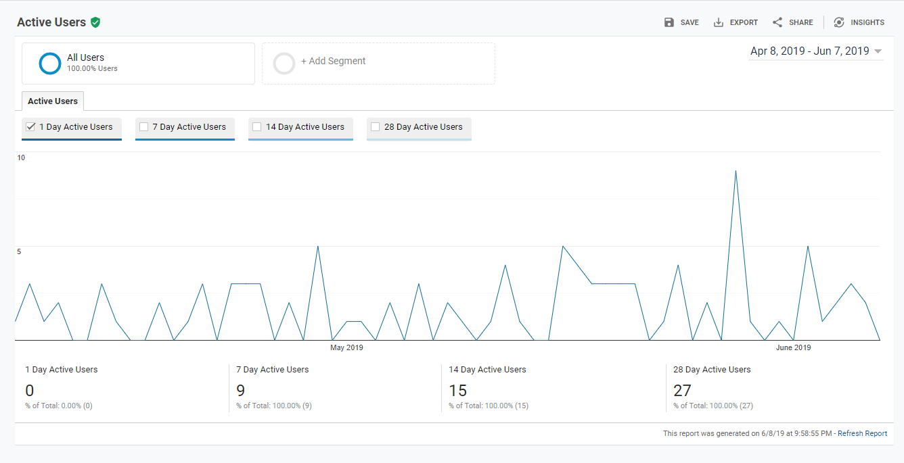
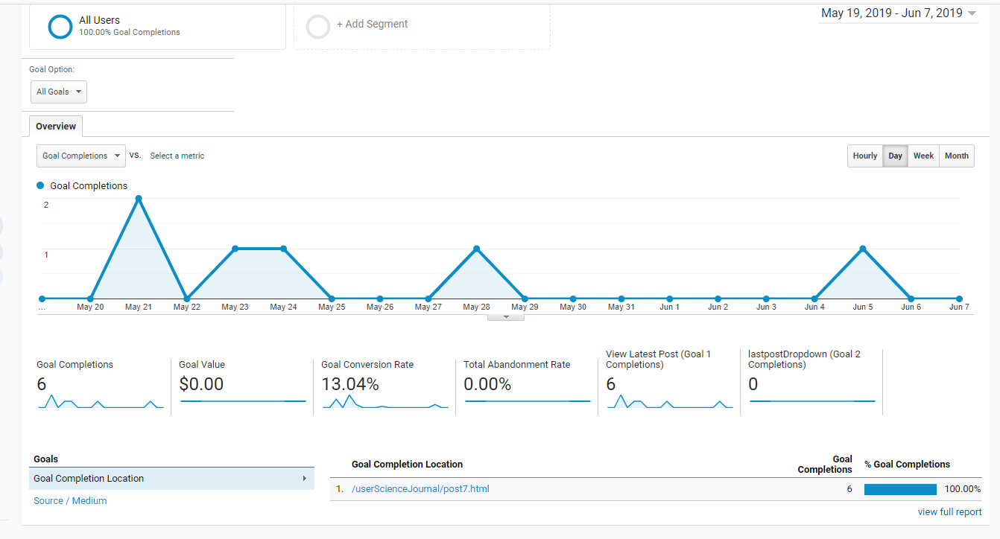
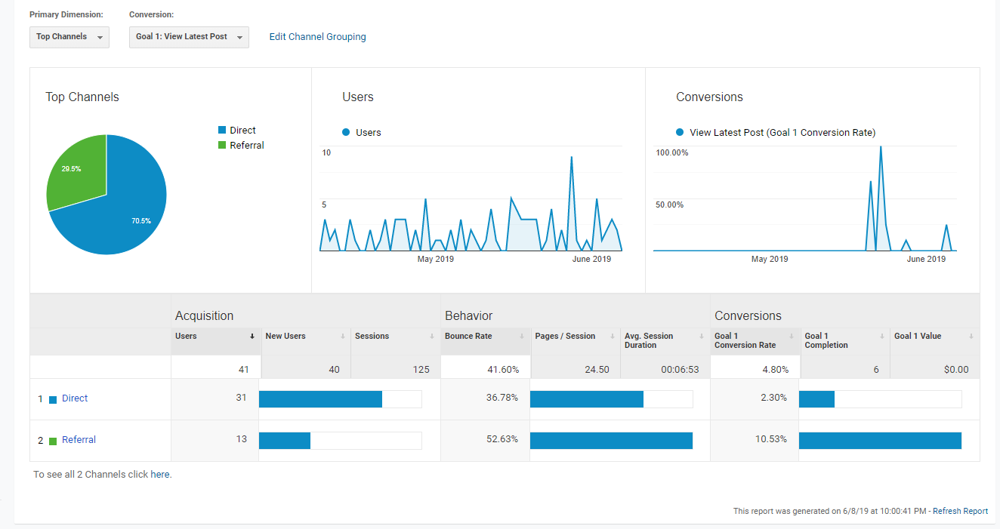

Goals Revisted...Again?
This week we are looking at the last weeks'posts: All That Data! and Use That Data!
We'll be looking at how the goals have worked out and if I've been able to funnel users to my goals.
 Google Analytics
Google Analytics
What were the Goals?
My goal for the past few weeks were to funnel users to my most recent* page.
While predicting what they will do is never going to be 100%, some trial and error may surpise you.
What I did:
- I added a link, which I colored green, to my home page advertising my latest post
- As a follow up, I added a link to the top of the drop-down navigation bar.

*for the sake of argument, we're going to call post 8 (All That Data!) the most recent.
How'd it Go:
  User OverviewOver the past few weeks I've been lucky enough to have 40 new users.
Over 125 sessions, those users have veiwed 3,062 pages and spent and average of 6 minutes on my website.
Let's Talk about Goals
 Goals OverviewOverall my goals were not the most sucessful,
I had 6 goal acomplishments over the two or three weeks that I was running the goal.
Looks like I'm going to have to step up my funneling game.
What (I think) Swayed the Results
Placeholder
A few of the factors I think most affected the results of the goal funneling were:
- Time: the goals were running for less than three weeks, with more time I (might) have more data.
- Number of users: I drummed up as many people as I could, but with more users I would have more data.
Even though I didn't get as much data as I was hoping for, I am surprised to see how much data I am able to collect with Google Analytics
Conclusion
I am still blown away by just how amazing these tools are for web developers. As I've been able to track the new users to my website, I've caught myself wanting to bring even more people, like challenging myself.
Over the course of 10 weeks, this website has gotten 40 new users. Seeing that makes me want to make more websites and see how many users I can bring to them.
 Detail of Google Analytics Goal Overview on New Users